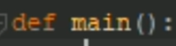
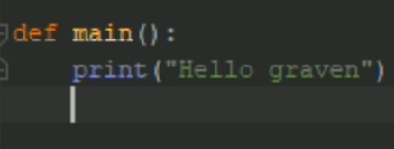
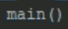
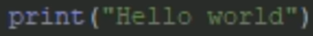
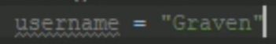
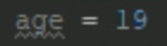
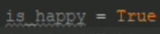
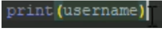
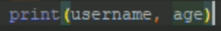

Apprendre python

Python est un langage de programmation qui a vu le jour dans les années 90, il a été créé par Guido van Rossum ; ce langage est une version simplifiée du C++.
Vous trouverez ici toutes les bases pour apprendre le python.
Créer une fonction :
Il faut tout d'abord créer une fonction principale qui permettra d'exécuter toutes les commandes souhaitées ;
En utilisant le mot clé « def » suivi d'un nom vous créez votre fonction.
Dans cette situation nous avons une fonction nommée main, et : print(« Hello graven ») est l’action qu'appliquera la fonction main.
Vous pourrez, pour que la fonction s'active automatiquement, la nommer dans votre code:
Ecrire un message :
Maintenant, nous allons voir comment afficher un message en python ;
pour cela vous devez utiliser le mot clé print et mettre entre parenthèses et entre guillemets le message que vous souhaitez afficher,
ici par exemple, le programme affichera le mot « Hello World ».
Les variables :
Nous allons voir ce qui est une variable et comment les utiliser.
Tout d'abord une variable est un élément qui permet de stocker temporairement une valeur, cela peut être une phrase qui peut stocker un ou plusieurs caractères ou un nombre.
Les 3 types de variables les plus connues sont : les variables strings qui ont comme valeur plusieurs caractères, les variables int ont pour valeur un nombre, les variables bool ont comme valeur soit true ou false.
Tout d'abord vous commencez par nommer votre variable, et vous lui donnez une valeur.
ATTENTION ! Le nom de votre variable ne doit pas contenir des espaces, il est préférable d’y mettre le caractère _ , de ne pas mettre de caractères spéciaux comme $,# ou % et d’éviter de commencer avec des chiffres car le nom de votre variable risque de ne pas être pris en compte si ces conditions ne sont pas remplies.
Ici par exemple j'ai créé une variable string nommée « username », et sa valeur est « Graven », si le résultat est un ou plusieurs caractères il faut les mettre entre parenthèses.
Et ici la variable int nommée « age » a pour valeur le nombre 19 .
Enfin cette variable bool nommée « is_happy » a pour valeur « true ».
Vous pouvez aussi avec la commande print afficher la valeur d'une variable,
Ici on demande d'afficher la valeur de la variable « username ».
Et en mettant 2 variables dans la parenthèse séparée d'une virgule, vous pouvez demander d'afficher les 2 variables.
